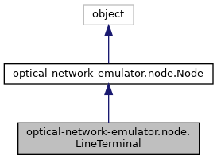

Inheritance diagram for optical-network-emulator.node.LineTerminal:

Collaboration diagram for optical-network-emulator.node.LineTerminal:
Public Member Functions | |
| def | __init__ (self, name, transceivers=None, monitor_mode='out', debugger=False) |
| def | monitor_query (self) |
| def | get_optical_signals (self) |
| def | reset_transceivers (self) |
| def | reset (self) |
| def | add_transceivers (self, transceivers) |
| def | existing_transceiver (self, transceiver) |
| def | add_transceiver (self, transceiver) |
| def | set_modulation_format (self, transceiver, modulation_format, tx=False) |
| def | tx_config (self, transceiver, operational_power_dBm) |
| def | assoc_tx_to_channel (self, transceiver, channel, out_port=-1) |
| def | assoc_channel (self, transceiver, channel, out_port) |
| def | disassoc_tx_to_channel (self, out_port) |
| def | assoc_rx_to_channel (self, transceiver, channel_id, in_port) |
| def | disassoc_rx_to_channel (self, in_port) |
| def | turn_on (self, safe_switch=False) |
| def | turn_off (self, ports_out) |
| def | receiver (self, optical_signal, in_port) |
| def | receiver_callback (self, in_port, signalDictInfo) |
 Public Member Functions inherited from optical-network-emulator.node.Node Public Member Functions inherited from optical-network-emulator.node.Node | |
| def | __init__ (self, name, debugger=True) |
| def | set_output_port (self, dst_node, link, output_port=-1) |
| def | set_input_port (self, src_node, link, input_port=-1) |
| def | include_optical_signal_in (self, optical_signal, power=None, ase_noise=None, nli_noise=None, in_port=0) |
| def | include_optical_signal_out (self, optical_signal, power=None, ase_noise=None, nli_noise=None, out_port=None) |
| def | remove_optical_signal (self, optical_signal) |
| def | remove_signal_from_out_port (self, port_out, optical_signal) |
| def | reset_component (self) |
| def | describe (self) |
| def | __repr__ (self) |
Static Public Member Functions | |
| def | osnr (power, ase_noise) |
| def | gosnr (power, ase_noise, nli_noise, baud_rate) |
Public Attributes | |
| transceivers | |
| name_to_transceivers | |
| id_to_transceivers | |
| monitor | |
| optical_signals_out | |
| tx_to_channel | |
| rx_to_channel | |
| Public Attributes inherited from optical-network-emulator.node.Node | |
| name | |
| debugger | |
| ports_in | |
| port_to_node_in | |
| node_to_port_in | |
| link_to_port_in | |
| ports_out | |
| port_to_node_out | |
| node_to_port_out | |
| port_to_link_out | |
| port_to_optical_signal_in | |
| optical_signal_to_port_in | |
| port_to_optical_signal_out | |
| optical_signal_to_port_out | |
| output_port_base | |
| input_port_base | |
Additional Inherited Members | |
| Static Public Attributes inherited from optical-network-emulator.node.Node | |
| int | input_port_base = 0 |
| int | output_port_base = 0 |
Member Function Documentation
◆ add_transceiver()
| def optical-network-emulator.node.LineTerminal.add_transceiver | ( | self, | |
| transceiver | |||
| ) |
Add a new transceiver to the Terminal :return: added transceiver
◆ add_transceivers()
| def optical-network-emulator.node.LineTerminal.add_transceivers | ( | self, | |
| transceivers | |||
| ) |
For-loop for adding transceivers to LT :param transceivers: list of tuples (t_name, operational_power, spectrum band) :return:
◆ assoc_rx_to_channel()
| def optical-network-emulator.node.LineTerminal.assoc_rx_to_channel | ( | self, | |
| transceiver, | |||
| channel_id, | |||
| in_port | |||
| ) |
Associate a receiver transceiver (rx) to a signal at an input port :param transceiver: Transceiver object :param channel_id: int, channel index :param in_port: int, input port
◆ assoc_tx_to_channel()
| def optical-network-emulator.node.LineTerminal.assoc_tx_to_channel | ( | self, | |
| transceiver, | |||
| channel, | |||
out_port = -1 |
|||
| ) |
Configures a Terminal by associating a transmission (tx) transceiver to a channel (int); the out_port is previously defined at Network creation :param transceiver: transceiver to use for transmission :param channel: the channel to be transmitted :param out_port: input port to terminal, -1 if none. :return: associate a transceiver to an optical signal
◆ disassoc_rx_to_channel()
| def optical-network-emulator.node.LineTerminal.disassoc_rx_to_channel | ( | self, | |
| in_port | |||
| ) |
Disassociate a receiver transceiver (rx) to an input port :param in_port: int, input port
◆ disassoc_tx_to_channel()
| def optical-network-emulator.node.LineTerminal.disassoc_tx_to_channel | ( | self, | |
| out_port | |||
| ) |
Disassociate a transmitter transceiver (tx) to an output port
◆ get_optical_signals()
| def optical-network-emulator.node.LineTerminal.get_optical_signals | ( | self | ) |
Get all optical signals by looking into the Transceiver objects
◆ receiver()
| def optical-network-emulator.node.LineTerminal.receiver | ( | self, | |
| optical_signal, | |||
| in_port | |||
| ) |
Will verify that the signal can be received, then compute the OSNR and gOSNR levels of the signal, and will do a callback to dataplane (if run in emulation mode). :param optical_signal: OpticalSignal object :param in_port: int, input port
◆ reset()
| def optical-network-emulator.node.LineTerminal.reset | ( | self | ) |
Remove all optical signals from the LineTerminal, and reset dynamic data structures
◆ reset_transceivers()
| def optical-network-emulator.node.LineTerminal.reset_transceivers | ( | self | ) |
Disassociate signals from all transceivers
◆ set_modulation_format()
| def optical-network-emulator.node.LineTerminal.set_modulation_format | ( | self, | |
| transceiver, | |||
| modulation_format, | |||
tx = False |
|||
| ) |
Update the modulation format of a transceiver :param transceiver: transmit transceiver object to configure :param modulation_format: string, i.e., '16_QAM' (see units.py) :return:
◆ turn_on()
| def optical-network-emulator.node.LineTerminal.turn_on | ( | self, | |
safe_switch = False |
|||
| ) |
Propagate signals to the link that the transceivers point to
◆ tx_config()
| def optical-network-emulator.node.LineTerminal.tx_config | ( | self, | |
| transceiver, | |||
| operational_power_dBm | |||
| ) |
Configure the operational power of the transceiver
The documentation for this class was generated from the following file:
- node.py